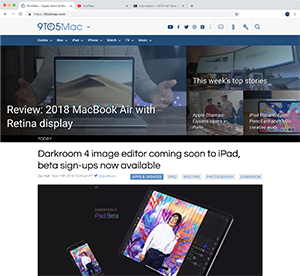
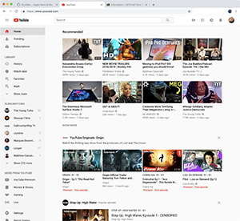
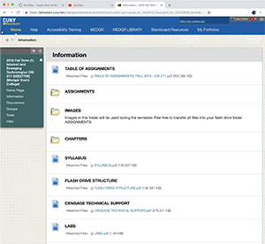

Favorite Sites
My most visited sites as of 19 November 2018 are:
- 9to5Mac – where I get my Apple and Apple related or adjacent news, rumors, information, and analysis. It is the main site in a family of sites, including 9to5Google, for Google and Android related news, and 9to5Toys, for tech shopping deals.
 - YouTube – where I keep up with my tech videos and reviews, independent news and political analysis, hood soap operas, and my new favorite pop culture discussion series, State of the Culture (#SOTC). YouTube is also a great resource for short form tutorials and mindless distractions.
 - Blackboard – As a student I need to keep up with course material and assignments. Blackboard is a global eduction software provider. At MEC, it is used as a virtual interface between student and professor for course material distribution and sometimes between students and students.
